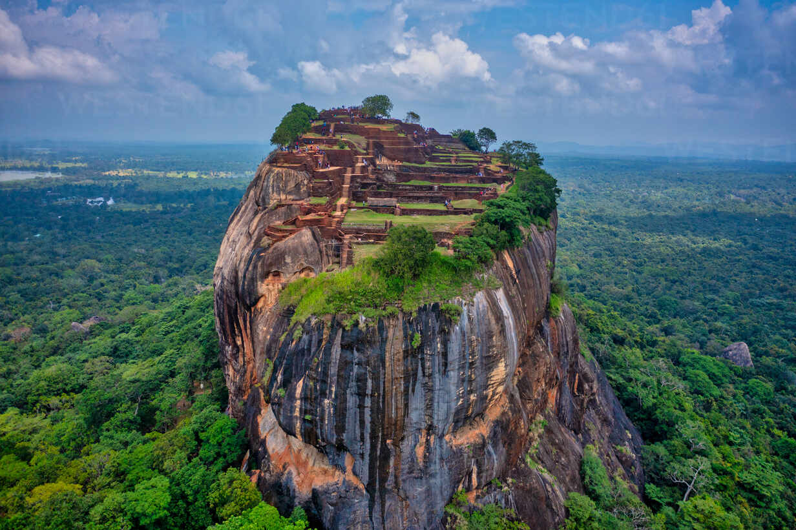
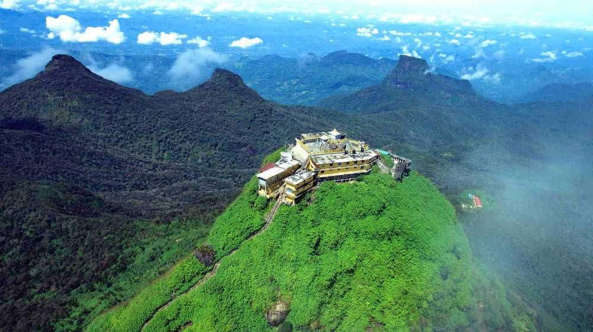
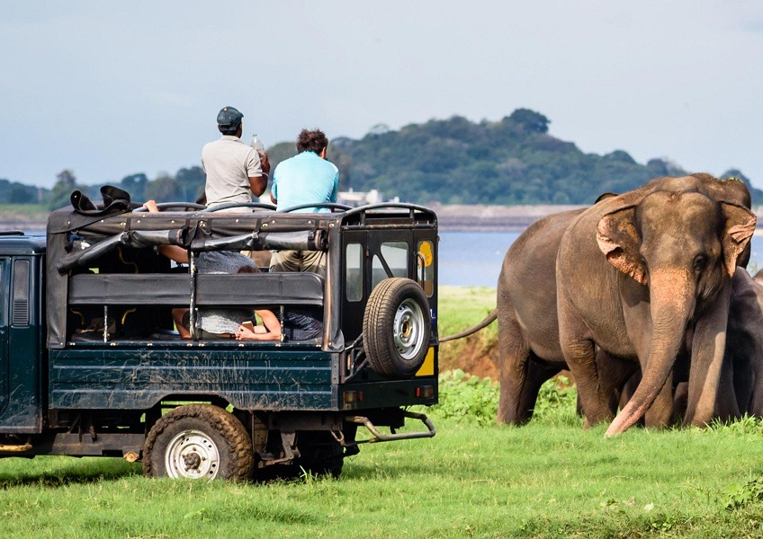
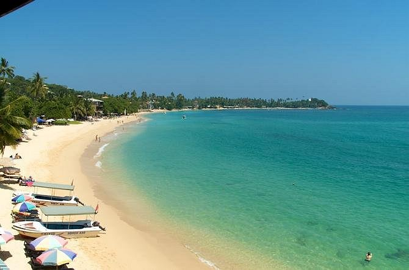
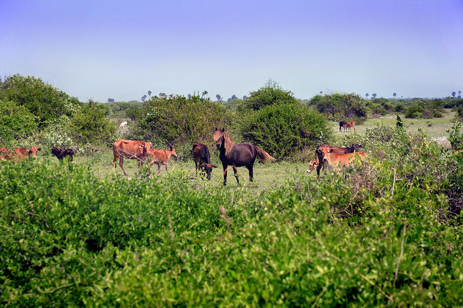
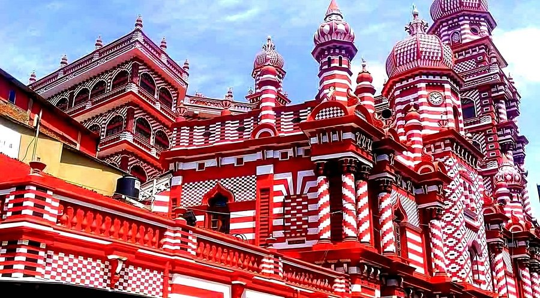
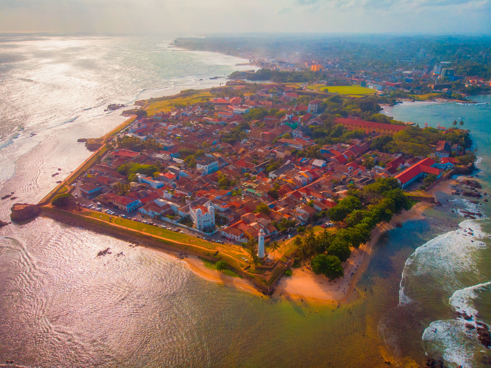

Sigiriya, also known as Lion Rock, is an ancient rock fortress featuring royal gardens, frescoes and breathtaking panoramic views.

Adams Peak is a sacred mountain famous for its sunrise views and spiritual importance among Buddhists, Hindus, Muslims and Christians.

Yala National Park offers thrilling wildlife safaris where you can spot leopards, elephants, crocodiles and exotic birds.

Arugam Bay is a world-famous surfing destination with golden beaches, relaxed vibes and stunning ocean views.

Delft Island is known for its wild horses, coral walls and unique Dutch colonial history in northern Sri Lanka.

The Red Mosque in Colombo is an architectural landmark known for its striking red and white patterned design.

Galle Fort is a UNESCO World Heritage Site featuring Dutch colonial architecture, ocean views and charming streets.